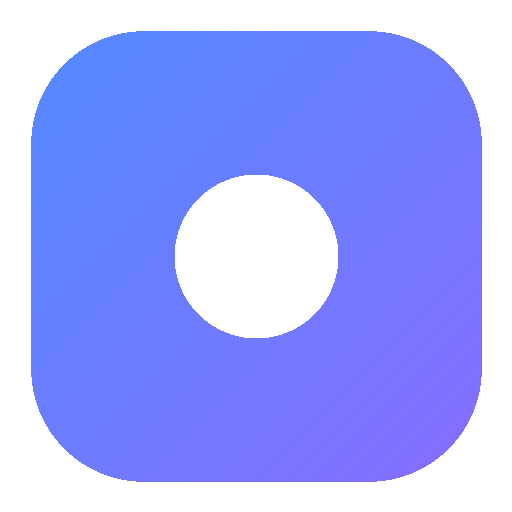

桌面悬浮层，常驻不打扰
像便签一样贴在桌面，始终置底、可鼠标穿透融入壁纸。锁定后点击直接穿透到桌面，解锁即可拖拽、缩放、调透明度。抬眼可见，绝不挡住其他窗口。

MyToDo一个轻量主界面管理事项，一个桌面悬浮层时刻提醒。数据本地实时同步。
像便签一样贴在桌面，始终置底、可鼠标穿透融入壁纸。锁定后点击直接穿透到桌面，解锁即可拖拽、缩放、调透明度。抬眼可见，绝不挡住其他窗口。
快速记录待办与时间，按全部 / 未完成 / 已完成过滤，关键字搜索秒级定位。
为事项设定时间，桌面层按时间排序；过期事项整行标红，一眼分清轻重缓急。
背景透明度无级调节，文字内置 8 色预设，深浅壁纸下都清晰可读。
所有事项存在本机 AppData，原子写入 + 损坏自动回退。不上传、不联网、不外泄。
可收进托盘后台运行，界面跟随 Windows 浅 / 深色，Fluent 玻璃质感原生贴合。
不为留存设计，不为变现妥协。下载、打开、记录，就这么简单。
开源 MIT 协议，永久免费。没有会员、没有解锁、没有内购。
没有任何弹窗、推送、推荐和埋点。它只做一件事，并且做好。
Tauri 原生构建，复用系统 WebView2，安装包仅几 MB，内存占用远低于 Electron 应用。
纯本地存储，不联网、不登录、不收集任何数据。代码全部开源可审计。